|
|
|
gorgonian
text index | photo
index
|
| Phylum Cnidaria > Class Anthozoa > Subclass Alcyonaria/Octocorallia > Order Gorgonacea |
| Leathery
sea fan awaiting identification* Family Gorgoniidae updated Mar 2020 Where seen? This bushy colony with thick, fleshy branches is sometimes seen on reefs on our Southern shores. On the reef flats and at reef edges, usually among living corals. Usually only one colony is seen at a location. Features: Colony bushy 20-30m wide, with stems that are long and not frequently branched. Each stem is cylindrical, thick (about 1cm in diameter) and fleshy with a texture that resembles leathery soft coral (Family Alcyoniidae). Usually dusky pinkish beige. Each stem has a dark, stiffly flexible wire-like central support that is sometimes exposed at the tips. Fat polyps are about 1cm long with short branched tentacles. They can retract completely leaving a smooth common tissue. Unlike other more colourful sea fans which are found in dark places or murky water, the Leathery sea fan harbours symbiotic algae (zooxanthellae) which produces nutrients through photosynthesis and shares these with the sea fan host. They are thus found in the open in reefs with clearer water. These sea fans may be Hicksonella princeps or Rumphella species. |
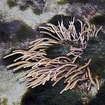 Pulau Jong, May 10 |
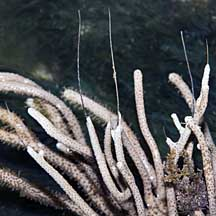 Wire-like central support. |
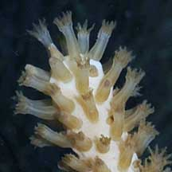 Polyps. |
|
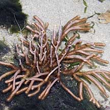 Terumbu Pempang Laut, Aug 10 |
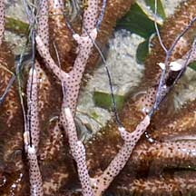 |
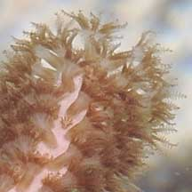 |
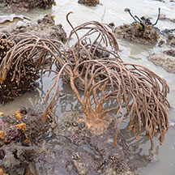 Kusu Island, May 25 |
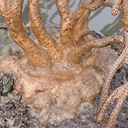 |
| Leathery lunch: Spindle cowries eat sea fans and one was seen on a Leathery sea fan. Sea fan winged oysters also settle on the branches of sea fans.. |
*Species are difficult to positively identify without close examination.
On this website, they are grouped by external features for convenience of display.
| Leathery sea fans on Singapore shores |
On wildsingapore
flickr
|
| Other sightings on Singapore shores |
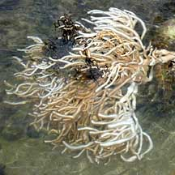 Terumbu Bemban, Jun 10 |
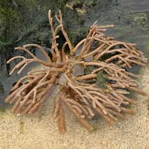 Pulau Biola, Dec 09 |
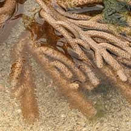 |
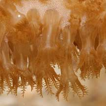 |
|
Links
References
|